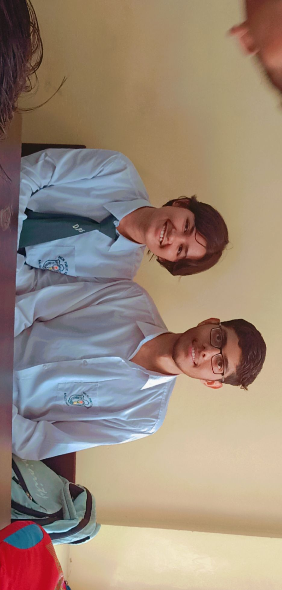

4 april 2022
Is din ko bhi bhulaya nhi ja sakta, is din bhut kuch first time hua aur sabkuch ekdum acha acha
hamne sath me agal-bagal khade hokar practical kiye, sath me baithe aur photo bhi khichwayi
iske pehle physics ka practical ho chuka tha, usme ham dono alag batch me the, tu dusre room me
mai doosre room me, mujhe lga tha shyd isme bhi aisa hi hoga, lekin hum dono same hi batch me the
mai bhut khush hogya tha, mst tere bagal me bhi khada hogaya tha. Utne me koi ata hai bolta hai omesh ko
ranjan sir phy lab me bula rhe hai, sachme ye sunkar bhut bura laga tha, mujhe laga ki mujhe firse pichle baar
ki tarah dusre batch me bhej rhe, jate samay man me ye socha tha ki sir se request karunga sir usi group me karne
dijiye experiment. Lekin wha par jakar pta chla kisi aur kaam se bulaye the(joki mai ab yaad nhi kar pa rha)
 fir us din maine shraddha k bagal me experiment kiye, mai to approximation k hisab se experiments kr rha tha
(aisa mai hamesha karta hu) lekin shraddha ekdum precise hokar, dhyan se experiment kr rhi thi. Mujhe yaad hai
mai intentionally shraddha se chipak rha tha, mtlb hamare hath ek dusre se beech beech me touch ho rhe the
fir us din maine shraddha k bagal me experiment kiye, mai to approximation k hisab se experiments kr rha tha
(aisa mai hamesha karta hu) lekin shraddha ekdum precise hokar, dhyan se experiment kr rhi thi. Mujhe yaad hai
mai intentionally shraddha se chipak rha tha, mtlb hamare hath ek dusre se beech beech me touch ho rhe the
uske baad hum class gaye, last working day school tha to sablog photo khicha rhe the, fir maine bhi shraddha k sath
photo khichayi, shraddha ne mere kandhe pr hath bhi rakha, fir shyd maine bhi haath rkha
fir hum pehli baar ek bench me sath bhi baithe, fir pehli baar humne ek dusre k hath pakde, fir shraddhajaan ne
mere kandhe pr thoda sa sir bhi rkha(Mujhe lgta hai agar usdin shyd mere kaan hlke se laal hue honge, pure time
mai apne aap ko control krne ki koshish kr rha tha).
us din k bare me likh rha hu to bhi sare shareer me jaise kuch ho rha hai, hlke hlke goosebups a rhe. ab to mai shraddha
k jab chahu hath pakad leta hu bina puche, kayi baar kafi pass bhi reh chuka lekin us din jo pehli baar touch karne ki feeling
hai use koi match nhi kar sakta, vo bilkul sapne sa hai swarg sa hai....

us din k liye Mai jitna thankyou bolu utna kam hai, us din jo kuch bhi hua sabkuch mai chahta tha ho, lekin agar shraddha
tu initiative nhi leti to mujhme itni himmat nhi thi ki mai simple photo khichwane ko bhi bol pata. Dil se shukriya shraddha
tune us din photo khichwane ko kaha, fir sath me bhi baithe fir tune hath bhi pkde aur I love you bhi kehne ko kaha
mai to bilkul numb ho gaya tha. Mujhe yaad hai tu mujhe keh rhi thi-"om, chal ab tu mere kandhe me haath rkh'
aur mai itna sharma rha tha ki nhi rkh rha tha, fir teri ankho me mujhe bhut sara confusion aur halka sa irritation
nazar aya tha.
isse ek baat samajh ayi ki mai bahut bada darpok hai, aur badi badi baatein to krta hu lekin asal me kaan
laal hone me der nhi lagti, agar tu nhi kehti to shayad vo din bhi normal hojata aur baad me mujhe bahut afsos hota.